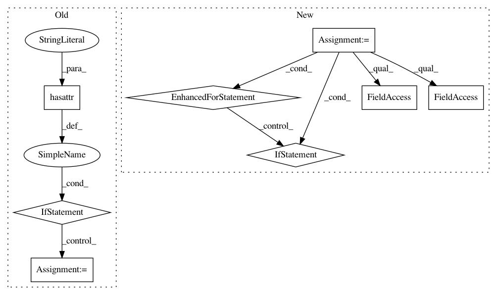

2de52a8976971da4836727ba9242fedcc7474878,src/sdk/pynni/nni/compression/torch/compressor.py,Pruner,export_model,#Pruner#Any#Any#Any#Any#,213
Before Change
mask_num = masks["weight"].numel()
_logger.info("Layer: %s Sparsity: %.2f", name, 1 - mask_sum / mask_num)
m.weight.data = m.weight.data.mul(masks["weight"])
if masks.__contains__("bias") and hasattr(m, "bias") and m.bias is not None:
m.bias.data = m.bias.data.mul(masks["bias"])
else:
_logger.info("Layer: %s NOT compressed", name)
torch.save(self.bound_model.state_dict(), model_path)
_logger.info("Model state_dict saved to %s", model_path)
After Change
mask_dict = {}
self._unwrap_model() // used for generating correct state_dict name without wrapper state
for wrapper in self.get_modules_wrapper():
weight_mask = wrapper.weight_mask
bias_mask = wrapper.bias_mask
if weight_mask is not None:
mask_sum = weight_mask.sum().item()
mask_num = weight_mask.numel()
_logger.info("Layer: %s Sparsity: %.2f", wrapper.name, 1 - mask_sum / mask_num)
wrapper.module.weight.data = wrapper.module.weight.data.mul(weight_mask)
if bias_mask is not None:
wrapper.module.bias.data = wrapper.module.bias.data.mul(bias_mask)
// save mask to dict
mask_dict[wrapper.name] = {"weight": weight_mask, "bias": bias_mask}
torch.save(self.bound_model.state_dict(), model_path)
_logger.info("Model state_dict saved to %s", model_path)
if mask_path is not None:
torch.save(mask_dict, mask_path)
In pattern: SUPERPATTERN
Frequency: 3
Non-data size: 8
Instances
Project Name: Microsoft/nni
Commit Name: 2de52a8976971da4836727ba9242fedcc7474878
Time: 2020-01-16
Author: 656569648@qq.com
File Name: src/sdk/pynni/nni/compression/torch/compressor.py
Class Name: Pruner
Method Name: export_model
Project Name: google/deepvariant
Commit Name: 3250fae3d34f3b14d6afe1b7f87daa98c7df3ed6
Time: 2020-06-17
Author: marianattestad@google.com
File Name: deeptrio/make_examples.py
Class Name: RegionProcessor
Method Name: process
Project Name: raghakot/keras-vis
Commit Name: 2443550ee6915daf6e7ff6306f3dc2922752ea4b
Time: 2017-07-09
Author: ragha@outlook.com
File Name: vis/backend/tensorflow_backend.py
Class Name:
Method Name: modify_model_backprop